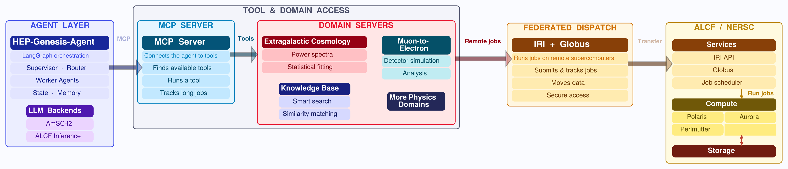
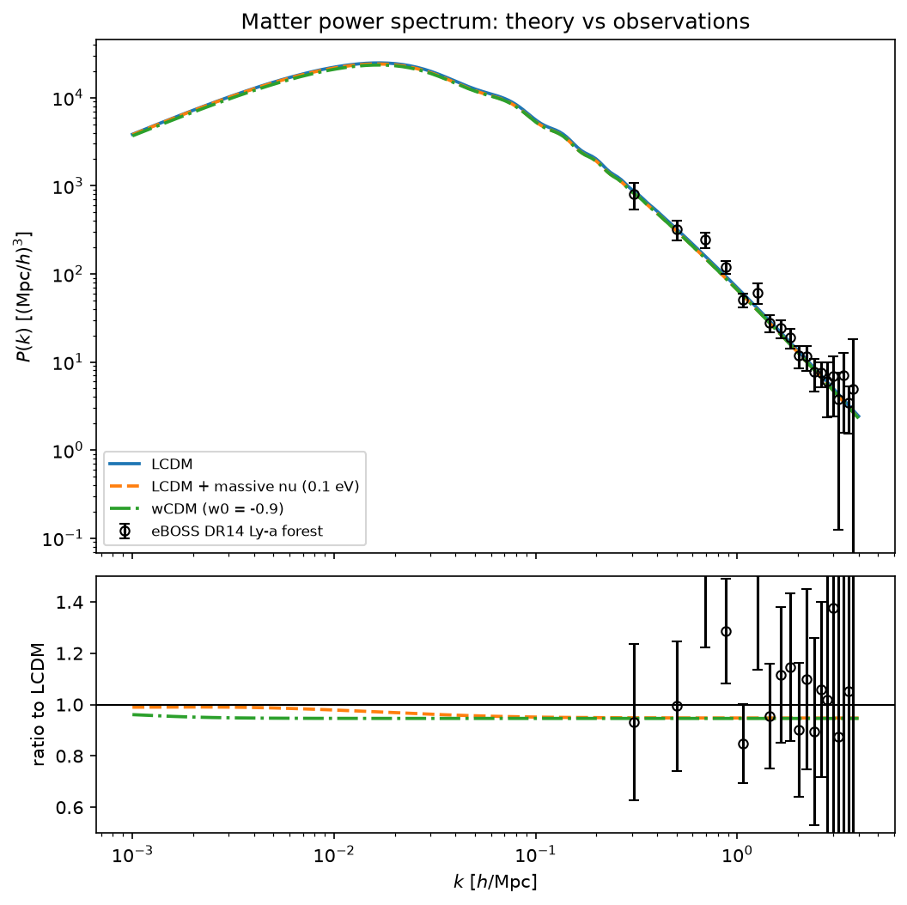

Tutorial: Building Scientific Agents
A LangGraph multi-agent client talks to a cosmology MCP server, plans the analysis, calls the tools, and reproduces a matter power spectrum figure from a single query.
github.com/HEP-KE/spectra-mcp-server
FastMCP server exposing 4 tools around the CLASS Boltzmann code.
github.com/HEP-KE/multiagent-client-demo
LangGraph client, ~250 lines: two LLM roles (lead + worker).
Use ← → to move between pages, or switch to Scroll to read everything on one page.
Why agentic systems for science?
Custom agentic systems vs commercial LLM interfaces
Limitations in LLMs can be overcome with agentic systems.
- Knowledge cut-off vs RAG / knowledge databases
- Fabrication of synthetic data / codes vs custom tools
- Big-data handling
Custom agentic systems vs commercial LLM harnesses
- Reasoning abilities of LLMs + coding expertise to be combined with scientific datasets
- Custom tools and custom harnesses provide a higher level of trust in the results
- Ability to work with HPC clusters and exascale codes
- Privacy and control concerns
- Scaling across large scientific user base
- Reusability vs token usage concerns
Agentic systems: client + server model

Multi-agent systems with HPC scaling: harnesses on local systems, hosted servers for each sub-field, APIs for control and transfer.
- Integration with Genesis Mission projects (HEP-Knowledge extraction and Quarks2Cosmos): customized agentic systems for physics.
- Tutorials, slack channels, and public GitHub repos are available outside the collaborations.
- Significant interest from science collaborations, universities and industry partners.
- Bridge between DOE-Genesis platform and science teams.
- Topics: LSST-DESC data exploration, Mu2e studies, EIC simulation-based inference, DESI clustering pipelines, beamline optimization, foundation models for HEP and NP, ….
Interfacing between LLMs and tools
MCP: a standard interface between agents and tools
- Write the tool once and host it on a server. Any MCP-speaking client (our LangGraph client, Claude Code, Codex) can call it.
- The server owns the science: the data files and plotting all live server-side.
- The client only sees tool schemas and small results, fully isolated from the servers.
Multiple ways to manage MCP
- stdio: the client launches the server as a subprocess (same machine).
- streamable-http: the server runs anywhere, and clients connect over the network. Covered today.
Two Python-based repos for client and server
HEP-KE/spectra-mcp-server
- FastMCP server exposing 4 tools around the CLASS Boltzmann code.
- Bundled eBOSS DR14 Ly-α forest P(k) data (19 bins, Chabanier+ 2019).
notebooks/01_manual_pipeline.ipynb: the science by hand, no LLM.
HEP-KE/multiagent-client-demo
- LangGraph client, ~250 lines: two LLM roles (lead + worker).
notebooks/02_demo_client.ipynb: the agent run, over HTTP.notebooks/03_next_steps.ipynb: stdio, Groq, skills, memory.
TASK = f"""Compute the linear matter power spectrum at z=0
for three cosmologies:
(1) standard LCDM,
(2) LCDM with total neutrino mass 0.10 eV, and
(3) wCDM with w0=-0.9.
Then plot all three against the eBOSS DR14 Lyman-alpha forest data,
using LCDM as the ratio reference. Save all files to {OUTPUT_DIR}."""

Clone, install, verify
Please do this before the tutorial. The tutorial involves 2 repos. One Python environment serves both, and you also need access to LLM tokens.
Clone both repos side by side
$ git clone https://github.com/HEP-KE/spectra-mcp-server.git $ git clone https://github.com/HEP-KE/multiagent-client-demo.git
The client notebook assumes ../spectra-mcp-server exists.
Create the conda environment
$ conda create -n spectra-tutorial python=3.12 -y $ conda activate spectra-tutorial $ cd spectra-mcp-server $ pip install cython numpy $ pip install -e ".[dev]" $ cd ../multiagent-client-demo $ pip install -r requirements.txt
The first pip install provides build helpers for classy. The second pulls in classy/CLASS, mcp, and the rest of the necessary packages.
Verify CLASS works
$ python -c "from classy import Class; c = Class(); c.set({'output':'mPk'}); c.compute(); print('CLASS OK')"If pip install classy failed (it compiles C code):
- macOS: run
xcode-select --install, then retrypip install classy. - Any platform:
conda install -c conda-forge classy.
Get a free API key from Gemini and Groq
Sign in to Google AI Studio
Go to aistudio.google.com/apikey and log in with your Google account. Make sure there are no credit cards on file.
Create API key
Copy the key and save it somewhere private.
Create your .env
In multiagent-client-demo/, copy the provided example and add your key.
$ cp .env.example .env # edit .env: GOOGLE_API_KEY=AIza...
The .env file is gitignored. Never commit keys.
Recommended backup: a free Groq key
Sign up at console.groq.com/keys with an email, no credit card. Add it to .env as GROQ_API_KEY=....
Groq serves open-weight US models (gpt-oss-120b) at ~14,400 requests/day. In the notebook it's just make_llm("groq") instead of make_llm().
If your university, lab, or collaboration provides tokens, those can be included too.
Test the setup
Run the server's test suite, then ask the model to say READY.
$ cd spectra-mcp-server && pytest $ cd ../multiagent-client-demo && python -c " from dotenv import load_dotenv; load_dotenv() from agents import make_llm print(make_llm().invoke('Say READY').content)"
From pytest
7 passed
From the model
READY
If both print, you're set. If things don't work, please raise an issue on GitHub.
Try the hosted servers from an AI app
The tutorial servers, plus a larger production cosmology server, run on a public demo host. You can talk to them from Claude desktop, ChatGPT, Claude Code, Codex, or Cursor with nothing installed, and get a feel for what the tutorial builds.
Tools are plain Python functions
@validate_call def compute_power_spectrum( model: Literal["lcdm", "nu_mass", "wcdm"], output_dir: str, sum_mnu_eV: Annotated[float, Field(ge=0, le=1.0)] = 0.10, w0: Annotated[float, Field(ge=-2.0, le=-0.3)] = -0.9, ... ) -> ArtifactResult: """Compute a linear matter power spectrum P(k) with the CLASS Boltzmann code. Use this tool once per cosmological model. It writes a CSV file and returns its path. Pass the returned file path to plot_power_spectra — never copy the numbers. """
No MCP imports here
- Type hints,
Fieldconstraints, and the docstring become the tool schema the agent sees. ArtifactResult: status, files, message, metadata.- Arrays travel as CSV file paths, never through the LLM context.
From Python package to MCP server
[tool.mcp-server] tool_modules = ["tools"]
__all__ = [
"get_eboss_data", "list_cosmology_models",
"compute_power_spectrum", "plot_power_spectra",
]
$ python -m mcp_server --transport streamable-http --port 8000 # clients connect to http://127.0.0.1:8000/mcp
A generic wrapper
mcp_server/reads pyproject, imports the modules, and registers every name in__all__as an MCP tool.- Add your own science: drop in a module, extend
__all__. Nothing else changes.
Connect to the server, pick an LLM
$ jupyter lab notebooks/02_demo_client.ipynb
HTTP_CONFIG = {
"spectra": {
"transport": "streamable_http",
"url": "http://127.0.0.1:8000/mcp",
}
}
tools = await load_tools(HTTP_CONFIG)
llm = make_llm() # Gemini free tier (default) llm = make_llm("groq") # alt: open-weight gpt-oss-120b
MCP tools → LangChain tools
langchain-mcp-adaptersfetches the schemas. The client can now call server code it has never imported.
Compatible LLM endpoints
- The free version of Gemini Flash is the default. OpenAI gpt-oss-120b, an open-weight model hosted on Groq, is an alternative.
- Any compatible LLM will work (Anthropic, OpenAI models).
- Keys live in
.env, never in code.
Note
- The Gemini free tier provides ~20 requests/day, about one full agent run.
- The LLM is not state-of-the-art by any means. Token costs can rise for paid models.
Two LLM roles: lead and worker (subagents)
Lead · visited twice
- First visit: break the task into a 2–5 step JSON plan.
- Last visit: write the final markdown report.
Worker · once per step
- A ~10-line ReAct loop: call tools until the model replies with text.
- Fresh messages each step. File paths from earlier steps are passed as context.
for _ in range(MAX_TOOL_ITERATIONS): reply = await _ainvoke(bound, messages) messages.append(reply) if not reply.tool_calls: break for call in reply.tool_calls: result = await tools_by_name[call["name"]] \ .ainvoke(call["args"]) messages.append( ToolMessage(str(result), tool_call_id=call["id"]))
The graph: routing is plain Python
def route_from_worker(state): if state["current"] < len(state["plan"]): return "worker" # more steps to run return "lead" # plan done -> report graph = StateGraph(AgentState) graph.add_node("lead", make_lead(llm, tools)) graph.add_node("worker", make_worker(llm, tools)) graph.add_edge(START, "lead") graph.add_conditional_edges("lead", route_from_lead, ["worker", END]) graph.add_conditional_edges("worker", route_from_worker, ["worker", "lead"]) return graph.compile()
The flow
START → lead (plan) → worker → worker → … → lead (report) → END
The “supervisor” is deterministic
- Two if-statements route the whole system. Not every agent in a multi-agent system needs to be an LLM call.
The graph diagram is in the backup pages.
State: what flows through the graph
class AgentState(TypedDict): task: str # the user's science question plan: list[Step] # written once by the lead current: int # index of the next step step_results: list[str] # one summary per step final_report: str # written by the lead, at the end history: list[str] # previous runs (for follow-ups)
Agent state through a directed graph
- Minimal setup: no worker types, no checkpointing. Production systems grow each of those.
- Every node receives the state and returns a partial update. LangGraph merges it.
A snapshot of the state mid-run is in the backup pages.
What we cover today, and what we don't
Covered
- 01: building science tools by hand. CLASS spectra vs eBOSS DR14, tools called as plain Python.
- Launch the MCP server over streamable-http, and list its tools from the client.
- 02: the agent run. Plan → tool calls → report, streamed live.
- Eval: the agent's figure vs the ground-truth figure, side by side.
Implemented, not covered
- stdio transport
- Different LLM backend
- Skills
- Memory
- Follow-up runs
Not implemented
- Parallel workers
- Checkpointing / human-in-the-loop
- Systematic evals
- Auth + deployment
- Multiple servers
Skills, memory, follow-ups & backends
Demo in notebooks/03_next_steps.ipynb
Skills: recipes loaded on demand
--- name: cosmology-comparison description: Recipe for comparing matter power spectra of several cosmologies against the eBOSS data --- # Cosmology comparison recipe 1. Call list_cosmology_models first if unsure ... 2. Compute the reference model (usually lcdm) FIRST ...
@tool def load_skill(name: str) -> str: """Load the full instructions of a named skill.""" ...
Skill vs tool
- A tool is a capability. A skill is know-how: how to use the tools well.
Progressive disclosure
- The lead only sees a name + description index at planning time. The worker loads the full text when a step needs it.
- Opt-in:
build_graph(llm, tools, extras=True).
Same idea as Claude Code's Agent Skills.
Memory: lessons that survive across runs
@tool def remember(lesson: str) -> str: """Save a one-line lesson to persistent memory for future runs. Use this sparingly, when you learn something non-obvious that would help next time.""" with MEMORY_FILE.open("a") as f: f.write(f"- {lesson.strip()}\n")
MEMORY.md at the repo root
- Read into the lead's planning prompt at the start of every run.
- The
remembertool lets the agent append a lesson worth keeping.
The smallest possible version of the memory systems in coding agents.
- In our test runs the agent wrote its own lesson, unprompted.
Follow-up runs and switching backends
def follow_up(previous, task): """A new run that remembers the previous one.""" entry = (f"Task: {previous['task']}\n" f"Outcome: {previous['final_report']}") return {**new_run(task), "history": previous["history"] + [entry]}
llm = make_llm("groq") # that's the whole switch
Follow-ups
- The
historyfield carries summaries of previous runs. “Now add w0=-1.1” reuses yesterday's CSVs instead of recomputing.
Backends
- No automatic fallback by design. If a key runs dry, you switch explicitly and know you did.
The graph: nodes and edges
The state mid-run: between steps 2 and 3
{
"task": "Compute P(k) at z=0 for three cosmologies ...",
"plan": [
{"id": 1, "description": "Compute the LCDM spectrum"},
{"id": 2, "description": "Compute the 0.10 eV nu_mass spectrum"},
{"id": 3, "description": "Compute the wCDM (w0=-0.9) spectrum"},
{"id": 4, "description": "Plot all three vs the eBOSS data"},
],
"current": 2, # next up: plan[2] -> step 3
"step_results": [
"Wrote agent-output/pk_lcdm.csv",
"Wrote agent-output/pk_nu_mass.csv",
],
"final_report": "", # still empty
"history": [], # first run, no follow-up
}
Where are we?
- The worker just finished
plan[1].route_from_workerseescurrent(2) <len(plan)(4) and returns “worker”. No LLM involved.
Handoffs are file paths
step_resultscarries the CSV paths. The next worker visit gets them as context and reuses them instead of recomputing.final_reportstays empty until the lead's last visit, after step 4.